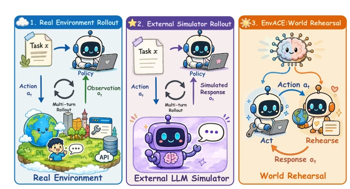
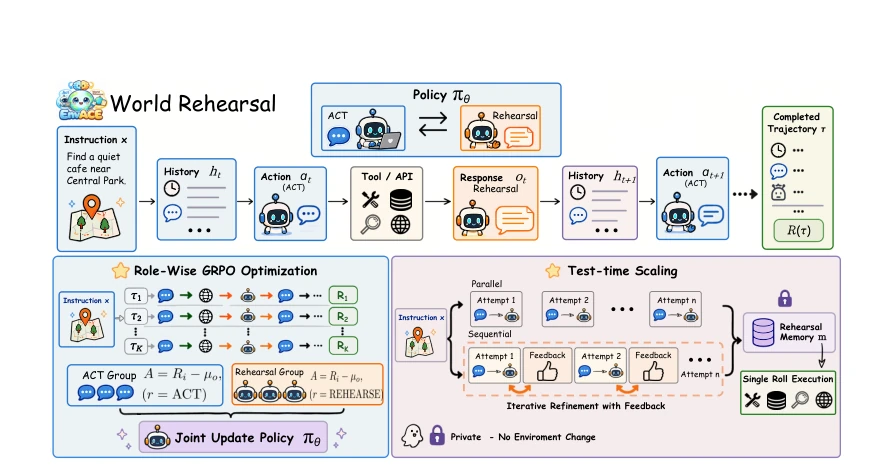
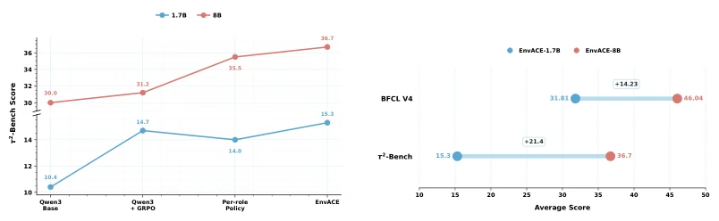
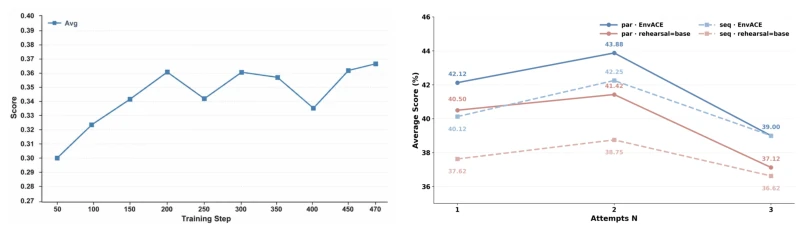
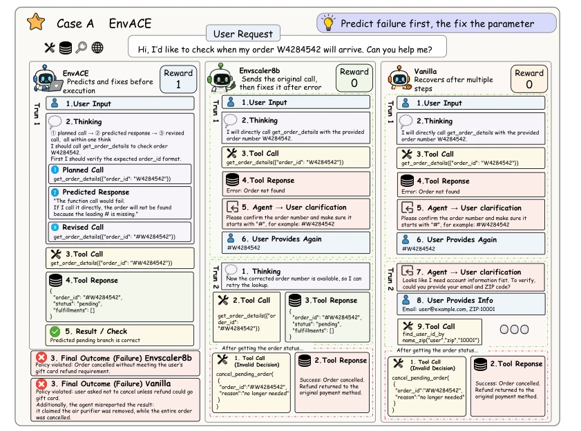
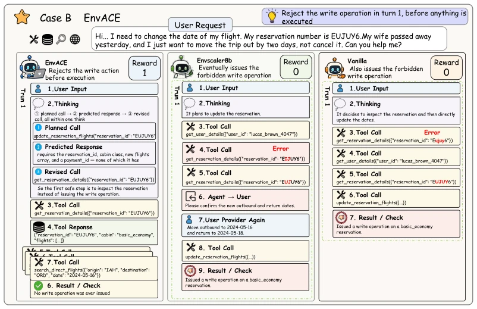

This paper pours cold water on the LLM Agent training community: stop fixating on those expensive and hard-to-maintain real environments or external simulators; isn't it better to "imagine" it yourself? The concept of "World Rehearsal" (World Rehearsal) proposed by EnvACE essentially lets the model act as its own environment's "plant", simulating environmental feedback internally and internalizing environmental dynamics into parameters. This approach does carry a suspicion of "self-indulgence", after all, could the feedback generated by the model itself be hallucinations? However, experimental results prove that this "self-produced and self-consumed" training method not only did not fail on multiple benchmarks but actually significantly outperformed baselines relying on external environments. However, the authors honestly admit that currently only 8B models were tested; whether larger models will go completely crazy due to excessive "imagining" remains unknown. Overall, this is an interesting attempt to turn the "world model" from an external plugin into core muscle; although it has not yet reached the realm of "creating something from nothing", it indeed saves a lot of trouble in real machine debugging for Agent training.
研究动机Motivation
当前LLM Agent训练主要依赖真实环境交互或外部模拟器，但这带来了两大痛点：一是构建和验证可执行环境成本极高且难以扩展（Lu et al., 2025; Yao et al., 2024）；二是基于LLM的模拟器虽然灵活，但生成的反馈往往不准确或缺乏 grounding，仍需真实环境监督（Li et al., 2025b; Ruan et al., 2024）。现有方法（如Dong et al., 2026; Tu et al., 2026）试图通过合成环境来扩展数据，但环境复杂度的增加使得验证变得异常困难。更关键的是，这些方法将环境建模与策略学习割裂，策略只负责“行动”，环境反馈由外部提供，导致策略无法真正内化环境动态。EnvACE 旨在打破这一僵局，通过让策略同时扮演“行动者”和“环境生成者”，将环境动态内化，从而摆脱对外部环境的依赖，实现更高效的长程任务规划。
Current LLM Agent training mainly relies on real environment interaction or external simulators, but this brings two major pain points: first, building and verifying executable environments is extremely costly and difficult to scale (Lu et al., 2025; Yao et al., 2024); second, although LLM-based simulators are flexible, the generated feedback is often inaccurate or lacks grounding, still requiring real environment supervision (Li et al., 2025b; Ruan et al., 2024). Existing methods (such as Dong et al., 2026; Tu et al., 2026) attempt to expand data through synthetic environments, but the increase in environment complexity makes verification exceptionally difficult. More critically, these methods separate environment modeling and policy learning; the policy is only responsible for "action", and environmental feedback is provided externally, leading to the policy being unable to truly internalize environmental dynamics. EnvACE aims to break this deadlock by letting the policy play both "actor" and "environment generator" simultaneously, internalizing environmental dynamics, thereby getting rid of dependence on external environments, and achieving more efficient long-horizon task planning.

Figure 1: Comparison of three agent rollout paradigms: real-environment rollout, external-simulator rollout, and EnvACE world rehearsal. Existing approaches obtain environment responses from ex- ternal sources, whereas EnvACE internalizes environment responses within the policy through world rehearsal.
The core of EnvACE is the "World Rehearsal" (World Rehearsal) mechanism, whose overall process reconstructs the traditional "Action-Observation" loop into an "Action-Rehearsal" loop. In the training phase, the shared policy πθ is endowed with dual roles: ACT (Action) and REHEARSE (Rehearsal). For a given instruction, the policy first generates action at, then switches to the REHEARSE role, based on current history ht and action at, generates simulated environmental response ot_hat. This simulated response is appended to the history to form a new state, the policy then generates the next action based on this, alternating in this way until the task ends. This self-generated trajectory no longer relies on external environments. In terms of optimization, the Role-wise GRPO algorithm is adopted, calculating advantage functions separately for ACT and REHEARSE outputs in the same trajectory, but sharing parameters for end-to-end updates, ensuring the policy can learn "how to do" and "how the environment will react" simultaneously. In the testing phase, EnvACE utilizes the internalized world model for "Private Rehearsal", without contacting real environments, generating multiple candidate trajectories in parallel or serially, evaluating and selecting the optimal path to execute, achieving computation scaling during inference (Test-time Scaling).

Figure 2: Overview of EnvACE and world rehearsal. Unlike conventional agentic RL, where an external environment provides observations after each action, EnvACE internalizes the interaction loop into a single policy. At each turn, the policy first produces an action, then rehearses the corre- sponding environment response, and conditions its next decision on the self-generated observation. This unified act–rehearse process enables the policy to learn environment dynamics during training and to simulate multiple candidate actions at test time before executing the most promising one in the real environment.
The study conducted extensive evaluations on four benchmarks: BFCL-v4, τ2-Bench, VitaBench, and FinMCP-Bench. Baselines include Qwen3 series models, Simulator-8B, TOUCAN-7B, EnvScaler-8B, and other strong baselines relying on external environments. Results show that EnvACE-8B reached 32.91% in overall score, outperforming EnvScaler-8B (31.92%) and AWM-14B (32.54%), especially improving by 5.5% on τ2-Bench. Ablation experiments show that shared parameters (parameter sharing) improve performance more than separated policies, verifying the effectiveness of internalizing environmental dynamics. Additionally, rehearsal at test time (N=2) can further improve performance, but N being too large (e.g., N=3) may lead to performance degradation due to context being too long. Experiments also confirm that this method is effective under different model scales (1.7B to 8B), and the F1 score is highest on FinMCP-Bench, demonstrating its generalization ability in complex tool calling scenarios.

Figure 3: Ablation results on τ 2-Bench. En- vACE achieves the best performance at both the 1.7B and 8B scales.

Figure 5: Evaluation performance of EnvACE- 8B throughout RL training on τ 2-bench.

Figure 7: Case study of EnvACE compared with EnvScaler8B and Vanilla agents. EnvACE pre- dicts potential tool-call failures before execution and automatically repairs invalid parameters, while baseline agents require additional recovery steps after failure.

Figure 8: Case study of EnvACE compared with EnvScaler8B and Vanilla agents. EnvACE performs world rehearsal before tool execution, predicting that the planned write operation would fail and proactively replacing it with a safe read-only query. In contrast, baseline agents fail to anticipate the consequence of tool calls and eventually execute invalid write operations.